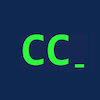

|  | GD Goenka University Coders Club |
The workshop is designed to introduce students with the basic concepts in image processing and how those techniques can be applied using library like OpenCV.
Aim:
Highlights:
What we'll cover:
Workshop Details:
Facilitator:
Nisha
nishachauhan0950@gmail.com
This workshop is recommended for those who are interested in learning image processing
and how to implement such well known techniques using OpenCV. Request you to carry your laptops for attending the workshop. Also, make sure that python3 and OpenCV is installed.
For registration please contact,
+91 89615 17827